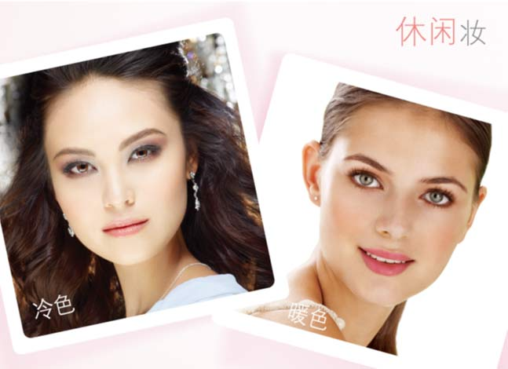
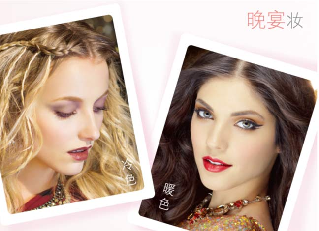

休闲妆
适合人群：任何人群
此妆容讲究的是清新活泼、富有朝气的感觉，选择的颜色相对比较的温柔、甜美。通常以突出眼睛的柔美和双颊的红润为主，表现出现代女性温柔与利落兼具的特质。它注重自然，在使用眼线时可以只勾勒靠近眼尾1/3处，也可以用棉签再加以晕染。选用接近唇色的唇膏，最后抹上对应颜色的唇彩，给人清新之感，在不经意间流露清透的闲适。
职业妆
适合人群：办公白领，上班一族
典雅而不高傲，时尚而不张扬，让你成为OFFICE中的一道风景。选择的彩妆颜色都比较干净、自然。色彩搭配冷静而清爽，眉毛宜有棱角，眼睛要有神采，轮廓尽量突出，才能给人以鲜明的第一印象。腮红不可强过于唇彩，重点是在于利用柔和的色彩使得整个妆容更加亮丽，缓和办公室的紧张气氛。此外，职业妆的唇部一定要用唇线勾勒精致唇型，随后再使用唇膏、唇彩，这样才能表现出职业女性的健康与自信。

晚宴妆
适合人群：参加正式场合或聚会的人
妆容可艳丽，色彩搭配丰富协调，五官描画可适当夸张哦~ 眼线可以相对浓重一些，以富有光泽的、高亮度的色彩重新描画唇线、涂口红及唇彩。
| |
Tips
完美的彩妆，最重要的基础就是选择合适的色彩和协调的色彩搭配；化妆要和谐其实很简单，要做到：根据肤色选择粉底，根据场合选择造型，根据服饰选择色系。
|
| |